微信公众号[深容Pubmed文献检索] 1. 此处右键：选菜单【翻成中文（简体）】 2. 翻译后，此处右键：选菜单【打印...】成PDF格式
建议屏幕分辨率：1920X1080；如果屏幕太小，可以按Ctrl + 或 Ctrl -缩放网页。
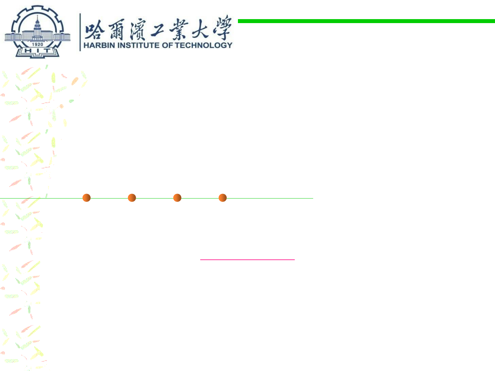
Software Construction
Chapter 6: Maintainability-Oriented Software
Construction Approaches
6.2 Design Patterns for
Maintainability
Xu hanchuan
Xhc@hit.edu.cn
April 17, 2019

Outline
6.2 Design Patterns for Maintainability
▪ Creational patterns
– Factory method pattern creates objects without specifying the exact class
to create.
– Abstract factory pattern groups object factories that have a common
theme.
– Builder pattern constructs complex objects by separating construction and
representation.
▪ Structural patterns
– Bridge decouples an abstraction from its implementation so that the two
can vary independently.
– Proxy provides a placeholder for another object to control access, reduce
cost, and reduce complexity.
– Composite composes zero-or-more similar objects so that they can be
manipulated as one object.

Outline
6.2 Design Patterns for Maintainability
▪ Behavioral patterns
– Observer is a publish/subscribe pattern which allows a number of
observer objects to see an event.
– Mediator allows loose coupling between classes by being the only class
that has detailed knowledge of their methods.
– Visitor separates an algorithm from an object structure by moving the
hierarchy of methods into one object.
– Chain of responsibility delegates commands to a chain of processing
objects.
– Command creates objects which encapsulate actions and parameters.

Gang of Four
6.2 Design Patterns for Maintainability
▪ Design Patterns: Elements of Reusable
Object-Oriented Software
▪ By GoF (Gang of Four)
– Erich Gamma
– Richard Helm
– Ralph Johnson
– John Vlissides

Design patterns taxonomy
6.2 Design Patterns for Maintainability
▪ Creational patterns
– Concern the process of object creation
▪ Structural patterns
– Deal with the composition of classes or objects
▪ Behavioral patterns
– Characterize the ways in which classes or objects interact and distribute
responsibility.

Software Construction
1 Creational patterns

Software Construction
(1) Factory Method pattern

6.2 Design Patterns for Maintainability
Example
Abstract product
Concrete product 1
public interface Trace {
// turn on and off debugging
public void setDebug( boolean debug );
// write out a debug message
public void debug( String message );
// write out an error message
public void error( String message );
}
public class FileTrace implements Trace {
private PrintWriter pw;
private boolean debug;
public FileTrace() throws IOException {
pw = new PrintWriter( new FileWriter( "t.log" ) );
}
public void setDebug( boolean debug ) {
this.debug = debug;
}
public void debug( String message ) {
if( debug ) {
pw.println( "DEBUG: " + message );
pw.flush();
}
}
public void error( String message ) {
pw.println( "ERROR: " + message );
pw.flush();
}
}


6.2 Design Patterns for Maintainability
Example
Abstract product
public interface Trace {
// turn on and off debugging
public void setDebug( boolean debug );
// write out a debug message
public void debug( String message );
// write out an error message
public void error( String message );
}
Concrete product 2
How to use?
public class SystemTrace implements Trace {
private boolean debug;
public void setDebug( boolean debug ) {
this.debug = debug;
}
public void debug( String message ) {
if( debug )
System.out.println( "DEBUG: " + message );
}
public void error( String message ) {
System.out.println( "ERROR: " + message );
}
}
//... some code ...
SystemTrace log1 = new SystemTrace();
log1.debug("entering log");
FileTrace log2 = new FileTrace();
log2.debug("... ");
The client code is tightly coupled with
concrete products with “new” method.
Static Factory Method
6.2 Design Patterns for Maintainability
▪ The normal way for a class to allow a client to obtain an instance of
itself is to provide a public constructor.
▪ A class can provide its clients with static factory methods instead
of, or inaddition to, constructors.
public static Boolean valueOf(boolean b) {
return b ? Boolean.TRUE : Boolean.FALSE;
}
Static Factory Method
6.2 Design Patterns for Maintainability
public class TraceFactory1 {
public static Trace getTrace() {
return new SystemTrace();
}
}
public class TraceFactory2 {
public static Trace getTrace(String type) {
if(type.equals("file")
return new FileTrace();
else if (type.equals("system")
return new SystemTrace();
}
}
//... some code ...
Trace log = TraceFactory1.getTrace();
log.debug("entering log");
Trace log = TraceFactory2.getTrace("system");
log.debug("...");
Static Factory Method
6.2 Design Patterns for Maintainability
▪ Advantages:
– Unlike constructors, they have names. 有名字，易于理解。
– Unlike constructors, they are not required to create a new object each time
they’re invoked. 不必一定要创建新对象，可以使用缓存等技术。
– Unlike constructors, they can return an object of any subtype of their
return type. 可以返回原返回类型的任何子类型。
▪ Disadvantages:
– The factory class includes the creation logic of all instances (products).
Once the factory does not work properly, the whole system will be
affected. 集中控制对象创建，一旦出现问题，则会影响整个系统
– It violates the Open-Close Principle, once a new product is added, the
logic of the factory class has to be modified, which will cause the factory
logic to be too complex. 违反了开闭原则，一旦增加新的类的对象创建，则
需要修改代码
Factory Method Pattern
6.2 Design Patterns for Maintainability
▪ Also known as “Virtual Constructor”
▪ Intent:
– Define an interface for creating an object, but let subclasses decide which
class to instantiate. 通过定义工厂父类负责定义创建对象的公共接口，而工
厂子类则负责生成具体的对象。

Example
public abstract class TraceFactory {
public abstract Trace getTrace();
//other methods…
}
6.2 Design Patterns for Maintainability
public class SystemTraceFactory extends TraceFactory {
public Trace getTrace() {
… //other operations
return new SystemTrace();
}
}
public class FileTraceFactory extends TraceFactory {
public Trace getTrace() {
return new FileTrace();
}
}
//... some code ...
TraceFactory traceFactory = new SystemTraceFactory();
Trace log = traceFactory.getTrace();
log.debug("entering log");
traceFactory = new FileTraceFactory();
log = traceFactory.getTrace();
log.debug("...");
Factory Method Pattern
6.2 Design Patterns for Maintainability
▪ When should we use Factory Method? ---- When a class:
– Can’t predict the class of the objects it needs to create. 当一个类不知道它所
需要的对象的类时。在工厂方法模式中，客户端不需要知道具体产品类的
类名，只需要知道所对应的工厂即可。
– Wants its subclasses to specify the objects that it creates.当一个类希望通过
其子类来指定创建对象时。在工厂方法模式中，对于抽象工厂类只需要提
供一个创建产品的接口，而由其子类来确定具体要创建的对象，利用面向
对象的多态性和Liskov原则，在程序运行时，子类对象将覆盖父类对象，
从而使得系统更容易扩展。
– Delegates responsibility to one of multiple helper subclasses, and you
need to localize the knowledge of which helper is the delegate.将创建对象
的任务委托给多个工厂子类中的某一个，客户端在使用时可以无须关心是
哪一个工厂子类创建产品子类，需要时再动态指定。
Factory Method Pattern
6.2 Design Patterns for Maintainability
▪ Advantage:
– Eliminates the need to bind application-specific classes to your code.
– Code deals only with the Product interface (Trace), so it can work with any
user-defined ConcreteProduct (FileTrace, SystemTrace). 代码同接口绑定
，不同具体类绑定。
– 符合OCP原则和单一责任原则。
▪ Potential Disadvantages
– Clients may have to make a subclass of the Creator, just so they can create a
certain ConcreteProduct. 每增加一种产品就需要增加一个新的工厂子类。
– This would be acceptable if the client has to subclass the Creator anyway,
but if not then the client has to deal with another point of evolution.

Software Construction
(2) Abstract Factory Pattern
6.2 Design Patterns for Maintainability
Abstract Factory Pattern Motivation
▪ Consider a user interface toolkit that supports multiple looks and feel
standards for different operating systems: 一个用户界面工具包，能够
支持不同操作系统的多种外观风格 ，如何采用单一的接口实现？
– Example: How can you write a single user interface and make it portable
across the different look and feel standards for these window managers? ？
▪ Consider a facility management system for an intelligent house that
supports different control systems: 智能家居中的不同控制系统，如何
设计单一的控制系统接口实现管理？
– How can you write a single control system that is independent from the
manufacturer?

Abstract Factory pattern
6.2 Design Patterns for Maintainability
▪ Name: Abstract Factory (or Kit)
▪ Intent: allow creation of families of related objects independent of
implementation 提供一个创建一系列相关或相互依赖对象的接口，而
无需指定它们具体的类
▪ Approach: Using a factory to return factories that can be used to
create sets of related objects. 使用工厂返回可用于创建相关对象集的
工厂。
▪ The abstract factory pattern extends the factory method pattern by
allowing more types of objects to be produced. 抽象工厂模式是对工
厂模式的扩展，允许一个工厂创建更多类型的对象(或者组合更多的对
象构成产品)，而工厂模式中一个对象只允许创建一个对象。
▪ 将关联零件组装成产品
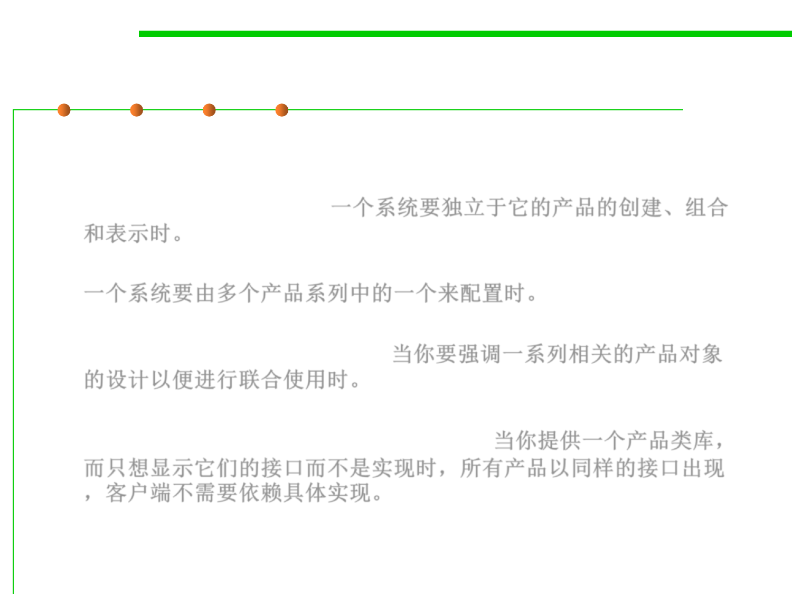
Abstract Factory pattern
6.2 Design Patterns for Maintainability
▪ Applicability
– A system should be independent of how its products are created,
composed, and represented.一个系统要独立于它的产品的创建、组合
和表示时。
– A system should be configured with one of multiple families of products.
一个系统要由多个产品系列中的一个来配置时。
– A family of related product objects is designed to be used together, and
you need to enforce this constraint.当你要强调一系列相关的产品对象
的设计以便进行联合使用时。
– You want to provide a class library of products, and you want to reveal
just their interfaces, not their implementations 当你提供一个产品类库，
而只想显示它们的接口而不是实现时，所有产品以同样的接口出现
，客户端不需要依赖具体实现。
Structure of Abstract Factory
6.2 Design Patterns for Maintainability
Example
6.2 Design Patterns for Maintainability

Software Construction
(3) Builder

Builder Pattern
6.2 Design Patterns for Maintainability
▪ Builder Pattern: Separate the construction of a complex object from
its representation so that the same construction process can create
different representations. 将复杂对象的构造与其表示分开，以便相同
的构建过程可以创建不同的表示
– The construction of a complex object is common across several
representations
▪ Example: Converting a document
to a number of different formats
– The steps for writing out a document
are the same
– The specifics of each step depend on
the format
▪ Just like you order a combo food
in McDonalds!
▪ 组装复杂的实例

Builder Pattern
6.2 Design Patterns for Maintainability
▪ Approach
– The construction algorithm is specified by a single class (the “director”)
– The abstract steps of the algorithm (one for each part) are specified by an
interface (the “builder”)
– Each representation provides a
concrete implementation of the
interface (the “concrete builders”)
Builder Pattern
6.2 Design Patterns for Maintainability
Example
6.2 Design Patterns for Maintainability
/* "Product" */
class Pizza {
private String dough = "";
private String sauce = "";
private String topping = "";
public void setDough(String dough) {
this.dough = dough;
}
public void setSauce(String sauce) {
this.sauce = sauce;
}
public void setTopping(String topping) {
this.topping = topping;
}
}
/* "Abstract Builder" */
abstract class PizzaBuilder {
protected Pizza pizza;
public Pizza getPizza() {
return pizza;
}
public void createNewPizzaProduct() {
pizza = new Pizza();
}
public abstract void buildDough();
public abstract void buildSauce();
public abstract void buildTopping();
}

Example
6.2 Design Patterns for Maintainability
/* "ConcreteBuilder 1" */
class SpicyPizzaBuilder extends PizzaBuilder {
public void buildDough() {
pizza.setDough("pan baked");
}
public void buildSauce() {
pizza.setSauce("hot");
}
public void buildTopping() {
pizza.setTopping("pepperoni+salami");
}
}
/* "ConcreteBuilder 2" */
class HawaiianPizzaBuilder extends
PizzaBuilder {
public void buildDough() {
pizza.setDough("cross");
}
public void buildSauce() {
pizza.setSauce("mild");
}
public void buildTopping() {
pizza.setTopping("ham+pineapple");
}
}
 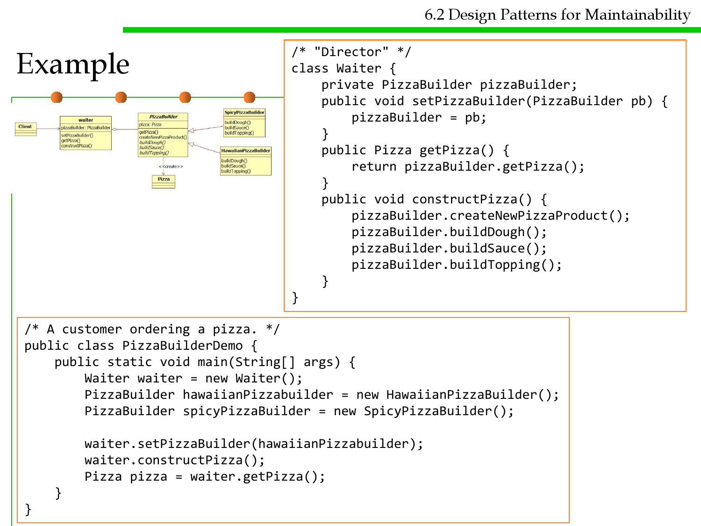
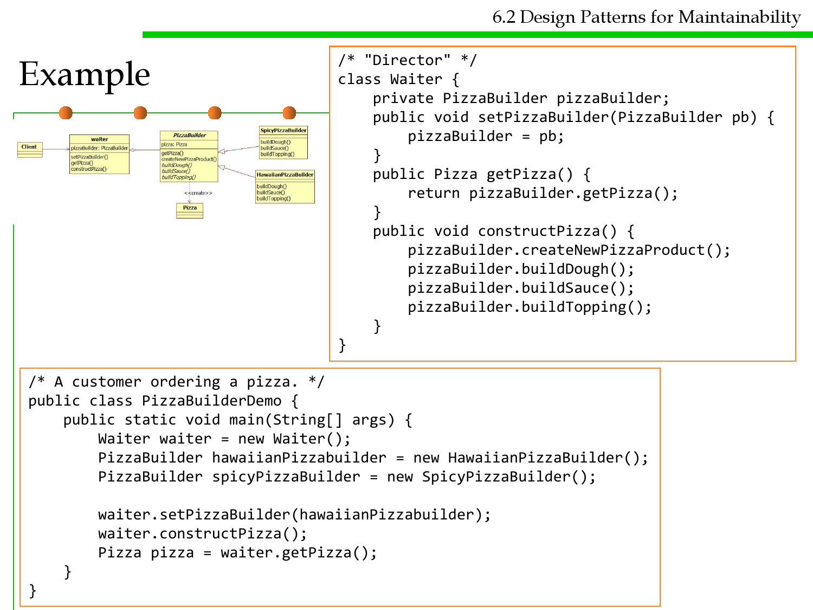
6.2 Design Patterns for Maintainability
Example
/* "Director" */
class Waiter {
private PizzaBuilder pizzaBuilder;
public void setPizzaBuilder(PizzaBuilder pb) {
pizzaBuilder = pb;
}
public Pizza getPizza() {
return pizzaBuilder.getPizza();
}
public void constructPizza() {
pizzaBuilder.createNewPizzaProduct();
pizzaBuilder.buildDough();
pizzaBuilder.buildSauce();
pizzaBuilder.buildTopping();
}
}
/* A customer ordering a pizza. */
public class PizzaBuilderDemo {
public static void main(String[] args) {
Waiter waiter = new Waiter();
PizzaBuilder hawaiianPizzabuilder = new HawaiianPizzaBuilder();
PizzaBuilder spicyPizzaBuilder = new SpicyPizzaBuilder();
waiter.setPizzaBuilder(hawaiianPizzabuilder);
waiter.constructPizza();
Pizza pizza = waiter.getPizza();
}
}

6.2 Design Patterns for Maintainability
Comparison: Abstract Factory vs Builder
▪ Abstract Factory
– Focuses on product family (similar product types) 专注于产品族的构建
– Does not hide the creation process 构建过程客户端可见
▪ Builder
– The underlying product needs to be constructed as part of the system, but
the creation is very complex (composition of products) 构建过程复杂
– The construction of the complex product changes from time to time 复杂产
品的构建会不时变化(修改Director类)
– Hides the creation process from the user 构建过程客户端不可见
▪ Abstract Factory and Builder work well together for a family of
multiple complex products 二者可以结合完成复杂产品族的构建

Software Construction
2 Structural patterns

Software Construction
(1) Bridge
Bridge Pattern
6.2 Design Patterns for Maintainability
▪ Applicability
– Decouple abstract concept with different implementations 将抽象概念与实
现分离，避免过于复杂的继承结构
– Implementation may be switched at run-time
– Implementation changes should not affect clients
– Hide a class’s interface from clients
▪ Structure: use two hierarchies
– Logical one for clients 面向客户的逻辑继承结构
– Physical one for different implementations 面向实现的物理继承结构
▪ Object: to improve extensibility
– Logical classes and physical classes change independently 两个继承结构分离
– Hides implementation details from clients
▪ 将类的功能层次结构(abstract)与实现层次结构分离(implementation)

Structure of Bridge Pattern
6.2 Design Patterns for Maintainability
impl is the bridge
扩展功能
扩展实现

Example
6.2 Design Patterns for Maintainability
Create bridge implementer interface
public interface DrawAPI {
public void drawCircle(int radius, int x, int y);
}
Create concrete bridge implementer classes
public class DrawRedCircle implements DrawAPI {
@Override
public void drawCircle(int radius, int x, int y) {
System.out.println(" Color: red " + radius + x + y);
}
}
public class DrawGreenCircle implements DrawAPI {
@Override
public void drawCircle(int radius, int x, int y) {
System.out.println(" Color: green " + radius + x + y);
}
}

Example
6.2 Design Patterns for Maintainability
Create an abstract class Shape using the DrawAPI interface
public abstract class Shape {
protected DrawAPI drawAPI;
protected Shape(DrawAPI drawAPI){
this.drawAPI = drawAPI;
}
public abstract void draw();
}
Create concrete class implementing the Shape interface
public class Circle extends Shape {
private int x, y, radius;
public Circle(int x, int y, int radius, DrawAPI drawAPI) {
super(drawAPI);
this.x = x;
this.y = y;
this.radius = radius;
}
public void draw() {
drawAPI.drawCircle(radius,x,y);
}
}

Example
6.2 Design Patterns for Maintainability
Use the Shape and DrawAPI classes to draw different colored circles
public class BridgePatternDemo {
public static void main(String[] args) {
Shape redCircle = new Circle(100,100, 10, new DrawRedCircle());
Shape greenCircle = new Circle(100,100, 10, new DrawGreenCircle());
redCircle.draw();
greenCircle.draw();
}
}

Software Construction
(2) Proxy
只在必要时生成实例

Proxy Pattern Motivation
6.2 Design Patterns for Maintainability
▪ Goal:
– Prevent an object from being accessed directly by its clients 避免对象被客
户端直接访问
▪ Solution:
– Use an additional object, called a proxy
– Clients access to protected object only through proxy
– Proxy keeps track of status and/or location of protected object
The Proxy Pattern: 3 Types
6.2 Design Patterns for Maintainability
▪ Caching of information (“Remote Proxy”)
– The Proxy object is a local representative for an object in a different
address space远程代理:为 一 个 对 象在 不 同 的 地 址 空间 提 供 局 部 代
表 (缓存机制)
– Good if information does not change too often
▪ Standin (“Virtual Proxy”)
– Object is too expensive to create or too expensive to download. 虚代理:根
据需要创建开销很大的对象
– Good if the real object is not accessed too often
▪ Access control (“Protection Proxy”) 保护代理
– The proxy object provides protection for the real object 提供访问保护
– Good when different actors should have different access and viewing
rights for the same object
– Example: Grade information accessed by administrators, teachers and
students.
6.2 Design Patterns for Maintainability
Proxy Pattern Class Diagram

Example
6.2 Design Patterns for Maintainability
延迟加载，提升性能

Software Construction
(3) Composite
容器与内容的一致性
Composite Pattern
6.2 Design Patterns for Maintainability
▪ Problem:
– Application needs to manipulate a hierarchical collection of "primitive"
and "composite" objects.
– Processing of a primitive object is handled one way, and processing of a
composite object is handled differently.
– Having to query the “type” of each object before attempting to process it is
not desirable.
– 容器中具有基本元素和组合元素两类，如何以统一的方式访问所有的元素
▪ Intent: Compose objects into tree structures to represent whole-part
hierarchies.
– Composite lets clients treat individual objects and compositions of objects
uniformly.
– Recursive composition 递归方式访问
– "Directories contain entries, each of which could be a directory."
– 1-to-many "has a" up the "is a" hierarchy

Composite Pattern
6.2 Design Patterns for Maintainability
▪ Menus that contain menu items, each of which could be a menu.
▪ Row-column GUI layout managers that contain widgets, each of
which could be a row-column GUI layout manager.
▪ Directories that contain files,
each of which could be a
directory.
▪ Containers that contain
Elements, each of which
could be a Container.
Example
6.2 Design Patterns for Maintainability
▪ In a company we have supervisors and workers. The supervisors
can manage other supervisors or workers under them.
▪ The supervisors will be the composites.
▪ The workers does not manage anyone and they will be the leaves.
▪ All the supervisors and workers are employees, and as an employee
you can always show your happiness level in the company (this is
the common operation of the elements).
Example
6.2 Design Patterns for Maintainability
public interface Employee {
void ShowHappiness();
}
public class Worker implements Employee{
private String name;
private int happiness;
public Worker(String name, int happiness)
{
this.name = name;
this.happiness = happiness;
}
public void ShowHappiness()
{
System.out.println(name + " showed happiness level of " + happiness);
}
}

Example
6.2 Design Patterns for Maintainability
public class Supervisor implements Employee{
private String name;
private int happiness;
private List<Employee> subordinate = new ArrayList<Employee>();
public Supervisor(String name, int happiness)
{
this.name = name;
this.happiness = happiness;
}
public void ShowHappiness()
{
System.out.println(name + " showed happiness level of " + happiness);
//show all the subordinate's happiness level
for (Employee i : subordinate)
i.ShowHappiness();
}
public void AddSubordinate(Employee employee)
{
subordinate.add(employee);
}
}

Example
6.2 Design Patterns for Maintainability
public static void main(String[] args) {
Worker a = new Worker("Worker Tom", 5);
Supervisor b = new Supervisor("Supervisor Mary", 6);
Supervisor c = new Supervisor("Supervisor Jerry", 7);
Supervisor d = new Supervisor("Supervisor Bob", 9);
Worker e = new Worker("Worker Jimmy", 8);
//set up the relationships
b.addSubordinate(a); //Tom works for Mary
c.addSubordinate(b); //Mary works for Jerry
c.addSubordinate(d); //Bob works for Jerry
d.addSubordinate(e); //Jimmy works for Bob
//Jerry shows his happiness and asks everyone else to do the same
c.showHappiness();
// the results:
Supervisor Jerry showed happiness level of 7
Supervisor Mary showed happiness level of 6
Worker Tom showed happiness level of 5
Supervisor Bob showed happiness level of 9
Worker Jimmy showed happiness level of 8
Jerry
Mary Bob
Tom Jimmy

Software Construction
3 Behavioral patterns

Software Construction
(1) Observer

Observer pattern
6.2 Design Patterns for Maintainability
▪ Problem: Dependent’s state must be consistent with master’s state
保持状态间的一致性
▪ Solution:
– The Observer Design Pattern allows you to have a publisher-subscriber
framework where a change to a publisher will notify all of its subscribers
automatically. 一种“发布-订阅”形式，发布方的变化，会通知订阅方
– The subscribers are registered to the publisher so that when a change
occurs in the publisher all of the subscribers are notified. 订阅方在发布方
注册
– The publishers and the subscribers are decoupled through the use of
interfaces so that the development of each can vary independently. 通过
接口分离两者
Observer pattern
6.2 Design Patterns for Maintainability
▪ Define four kinds of objects:
– Abstract subject: maintain list of dependents; notifies them when master
changes (the publishers) 维护订阅者列表
– Abstract observer: define protocol for updating dependents (the
subscribers) 定义更新的协议
– Concrete subject: manage data for dependents; notifies them when master
changes 维护数据，修改后通知订阅者
– Concrete observers: get new subject state upon receiving update message
得到通知后，修改自身的状态

Example
6.2 Design Patterns for Maintainability
public abstract class NumberGenerator {
private ArrayList observers = new ArrayList();
// 保存Observers
public void attach(Observer observer) { // 注册Observer
observers.add(observer);
}
public void detach(Observer observer) { // 删除Observer
observers.remove(observer);
}
public void notify() {
// 向Observer发送通知
Iterator it = observers.iterator();
while (it.hasNext()) {
Observer o = (Observer)it.next();
o.update(this);
}
}
public abstract int getNumber(); // 获取数值
public abstract void execute(); // 生成数值
}
public interface Observer {
public abstract void update(NumberGenerator generator);
}

Example
6.2 Design Patterns for Maintainability
public class RandomNumberGenerator extends NumberGenerator {
private Random random = new Random(); // 随机数生成器
private int number;
// 当前数值
public int getNumber() {
return number;
}
// 获取当前数值
public void execute() {
for (int i = 0; i < 20; i++) {
number = random.nextInt(50);
notify();
}
}
}
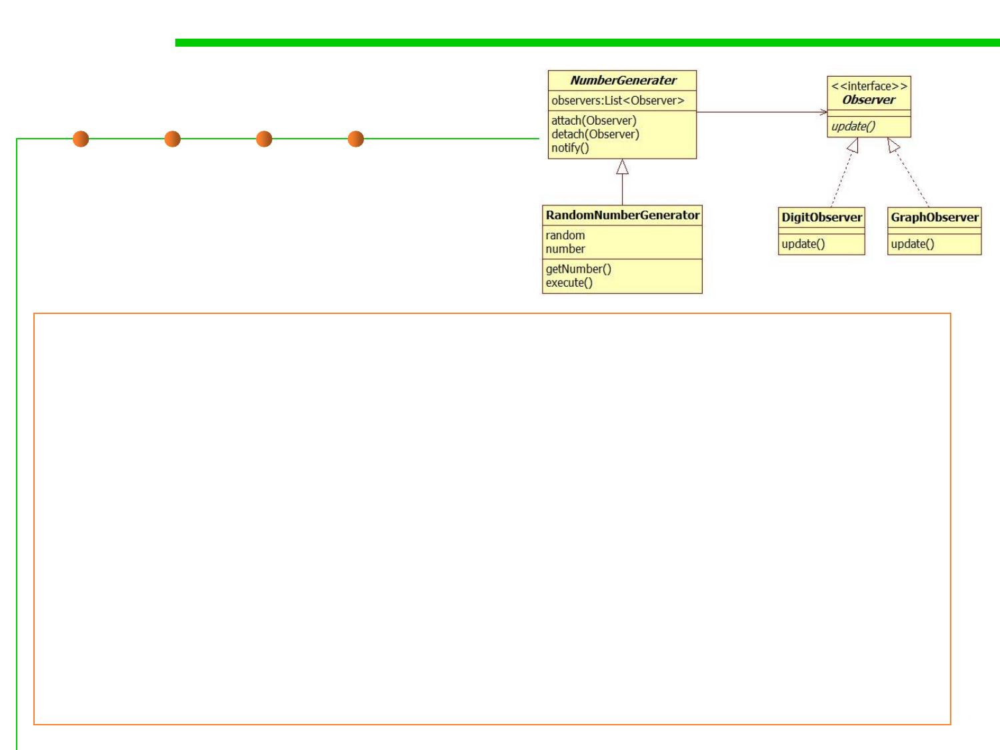
Example
6.2 Design Patterns for Maintainability
public class DigitObserver implements Observer {
public void update(NumberGenerator generator) {
System.out.println("DigitObserver:" + generator.getNumber());
}
}
public class GraphObserver implements Observer {
public void update(NumberGenerator generator) {
System.out.print("GraphObserver:");
int count = generator.getNumber();
for (int i = 0; i < count; i++) {
System.out.print("*");
}
System.out.println("");
}
}
Example
6.2 Design Patterns for Maintainability
public class Main {
public static void main(String[] args) {
NumberGenerator generator = new RandomNumberGenerator();
Observer observer1 = new DigitObserver();
Observer observer2 = new GraphObserver();
generator.attach(observer1);
generator.attach(observer2);
generator.execute();
}
}
The result：
DigitObserver:37
GraphObserver:*************************************
DigitObserver:21
GraphObserver:*********************
DigitObserver:19
GraphObserver:*******************
DigitObserver:24
GraphObserver:************************
DigitObserver:39
GraphObserver:***************************************
……
6.2 Design Patterns for Maintainability
Example: Observer and Observable in Java
o为被观察对象，为观察者提供
了一种拉取数据的方式。update
中的业务可以根据所需去拉取自
己想要的被观察对象的信息(一般
被观察对象中提供getter)
public interface Observer {
void update(Observable o, Object arg);
}
public class Observable {
private boolean changed = false;
private Vector<Observer> obs;
public Observable(){};
protected synchronized void setChanged(){};
protected synchronized void clearChanged(){};
public synchronized void addObserver(Observer o){};
public synchronized void deleteObserver(Observer o) {};
public synchronized void deleteObservers(){};
public synchronized boolean hasChanged(){};
public synchronized int countObservers(){};
public void notifyObservers(){};
public void notifyObservers(Object arg){};
}
推送给观察者的信息。调用
Observable实例的
notifyObservers(Object obj)
方法时传入。
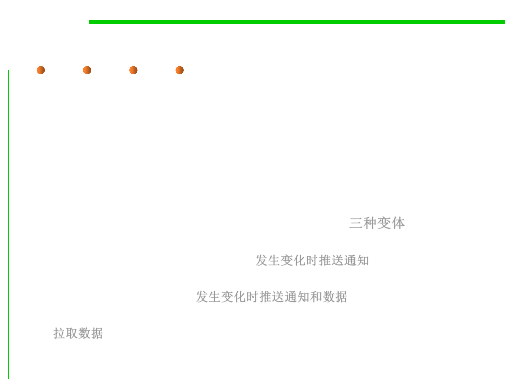
Observer Pattern
6.2 Design Patterns for Maintainability
▪ Models a 1-to-many dependency between objects
– Connects the state of an observed object, the subject with many observing
objects, the observers
▪ Usage:
– Maintaining consistency across redundant states
– Optimizing a batch of changes to maintain consistency
▪ Three variants for maintaining the consistency: 三种变体
– Push Notification: Every time the state of the subject changes, all the
observers are notified of the change 发生变化时推送通知
– Push-Update Notification: The subject also sends the state that has been
changed to the observers 发生变化时推送通知和数据
– Pull Notification: An observer inquires about the state the of the subject
拉取数据
▪ Also called Publish-subscribe.

Observer Pattern
6.2 Design Patterns for Maintainability
▪ Advantage:
– Low coupling between subject and observers: Subject unaware of
dependents 主体(被观察者)和观察者之间松耦合，主体不需要关注观察者
– Support for broadcasting: Dynamic addition and removal of observers
– Unexpected updates: No control by the subject on computations by
observers
▪ Implementation issues
– Storing list of observers: typically in subject 主体需要存储观察者列表
– Observing multiple subjects: typically add parameters to update()
– Who triggers update: state-setting operations of subject 触发机制

Software Construction
(2) Mediator

Mediator Pattern
6.2 Design Patterns for Maintainability
▪ An airport control tower looks after the flights that can take off and
land - all communications are done from the airplane to control
tower, rather than having plane-to-plane communication.
▪ This idea of a central controller is one of the key aspects to the
mediator pattern.
▪ Allows loose coupling by encapsulating the way disparate sets of
objects interact and communicate with each other.
▪ Allows for the actions of each object set to vary independently of
one another.


Mediator Pattern
6.2 Design Patterns for Maintainability
▪ The Mediator defines the interface for communication
between Colleague objects.
▪ The ConcreteMediator implements the Mediator interface and
coordinates communication between Colleague objects.
– It is aware of all the Colleagues and their purpose with regards to inter
communication.
▪ The ConcreteColleague communicates with other colleagues
through the mediator.
▪ Without this pattern, all of the Colleagues would know about each
other, leading to high coupling.
▪ By having all colleagues communicate through one central point we
have a decoupled system while maintaining control on the object's
interactions.

Example
6.2 Design Patterns for Maintainability
//Mediator interface
public interface Mediator {
public void send(String message, Colleague colleague);
public void addColleague(Colleague colleague);
public void removeColleague(Colleague colleague);
}
//Colleage interface
public abstract class Colleague{
private Mediator mediator;
public Colleague(Mediator m) {
mediator = m;
}
//send a message via the mediator
public void send(String message) {
mediator.send(message, this);
}
//get access to the mediator
public Mediator getMediator() {return mediator;}
public abstract void receive(String message);
}

Example
6.2 Design Patterns for Maintainability
// Concrete mediator implementation
public class ConcreteMediator implements Mediator {
private ArrayList<Colleague> colleagues;
public ApplicationMediator() {
colleagues = new ArrayList<Colleague>();
}
@override public void addColleague(Colleague colleague) {
colleagues.add(colleague);
}
public void send(String message, Colleague originator) {
//let all other screens know that this screen has changed
for(Colleague colleague: colleagues) {
//don't tell ourselves
if(colleague != originator) {
colleague.receive(message);
}
}
}
}
/p}p}/u//upCb}C}pbluoolubinSibnSlccycclyrisirscectccetltelteavemeavmso.os.iscocisooduodulCtCltolr.lro.enepenepcacraccrgreigerieeineeinvttvttieelieelCm(nmC(nopS(poS(tll"llt"lerCerlCemiomeioenaleanlgnglngglutetueeamaaemategtegsieuiesuoxseosxenatntageRgeRenenee)dcd)csese{i{iCvCvoeoeldldl:l:eea"a"ggu+u+eemm{e{essssaaggee));;

Example
6.2 Design Patterns for Maintainability
public class Client {
public static void main(String[] args) {
Mediator mediator = new ConcreteMediator();
Colleague desktop = new ConcreteColleague(mediator);
Colleague mobile = new MobileColleague(mediator);
mediator.addColleague(desktop);
mediator.addColleague(mobile);
desktop.send("Hello World");
mobile.send("Hello");
}
}
The result:
Colleague Received: Hello World
Colleague Received: Hello
6.2 Design Patterns for Maintainability
Mediator Pattern vs. Observer Pattern
▪ They have some similarities and some clear differences.
▪ Similarities：
– Both patterns facilitates the communication between objects
– Both decouples the link between the sender and the receiver.
▪ Differences
– In mediator pattern, there is the notion of the participants and
they communicate with each other using the mediator as a central hub. 中
介者模式中，参与者之间区分不明显（既可以是发送者，也可以是接收者)
，通过mediator作为集中式的hub进行通讯。
– In observer pattern, there is a clear distinction between the sender and the
receiver, and the receiver merely listens to the changes in the sender. 观察
者模式中，信息的发送者和接收者划分明确，接收者主要接收发送者发送
的通知和数据。

Software Construction
(3) Visitor
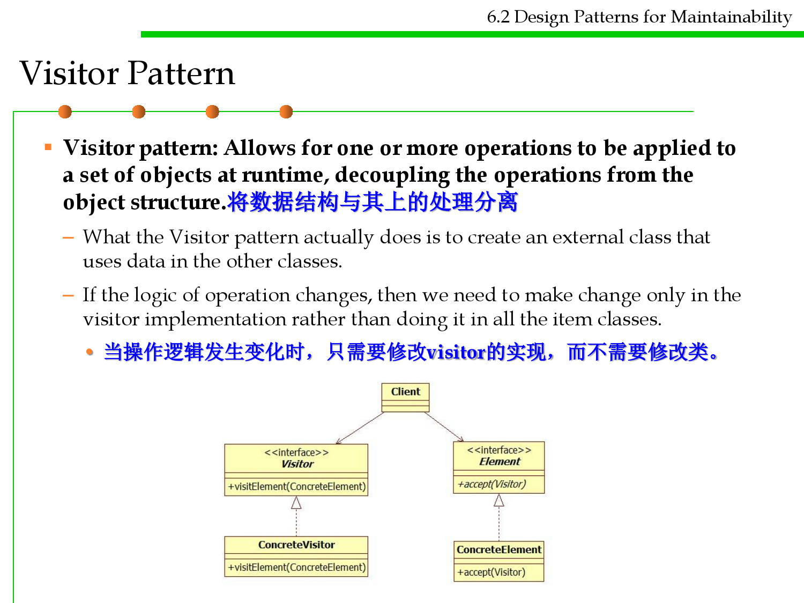
Visitor Pattern
6.2 Design Patterns for Maintainability
▪ Visitor pattern: Allows for one or more operations to be applied to
a set of objects at runtime, decoupling the operations from the
object structure.将数据结构与其上的处理分离
– What the Visitor pattern actually does is to create an external class that
uses data in the other classes.
– If the logic of operation changes, then we need to make change only in the
visitor implementation rather than doing it in all the item classes.
• 当操作逻辑发生变化时，只需要修改visitor的实现，而不需要修改类。
Visitor Pattern
6.2 Design Patterns for Maintainability

Example
6.2 Design Patterns for Maintainability
/* Abstract element interface (visitable) */
public interface ItemElement {
public int accept(ShoppingCartVisitor visitor);
}
/* Concrete element */
public class Book implements ItemElement{
private double price;
public int accept(ShoppingCartVisitor visitor){
return visitor.visit(this);
}
…
}
public class Fruit implements ItemElement{
private double weight;
public void accept(ShoppingCartVisitor visitor){
return visitor.visit(this);
}
…
}

Example
6.2 Design Patterns for Maintainability
/* Abstract visitor interface */
public interface ShoppingCartVisitor {
int visit(Book book);
int visit(Fruit fruit);
}
public class ShoppingCartVisitorImpl implements ShoppingCartVisitor {
public int visit(Book book) {
int cost=0;
if(book.getPrice() > 50){
cost = book.getPrice()-5;
}else
cost = book.getPrice();
System.out.println("Book ISBN::"+book.getIsbnNumber() + " cost ="+cost);
return cost;
}
public int visit(Fruit fruit) {
int cost = fruit.getPricePerKg()*fruit.getWeight();
System.out.println(fruit.getName() + " cost = "+cost);
return cost;
}
}

Example
6.2 Design Patterns for Maintainability
public class ShoppingCartClient {
private static int calculatePrice(ItemElement[] items) {
ShoppingCartVisitor visitor = new ShoppingCartVisitorImpl();
int sum=0;
for(ItemElement item : items)
sum = sum + item.accept(visitor);
return sum;
}
public static void main(String[] args) {
ItemElement[] items = new ItemElement[]{
new Book(20, "1234"),new Book(100, "5678"),
new Fruit(10, 2, "Banana"), new Fruit(5, 5, "Apple")};
int total = calculatePrice(items);
System.out.println("Total Cost = "+total);
}
}

Software Construction
(4) Chain of Responsibility

Chain of Responsibility
6.2 Design Patterns for Maintainability
▪ The chain of responsibility pattern allows you to pass a request to
from an object to the next until the request is fulfilled. 在多个对象间逐一
传递请求，直到有能够处理的对象执行。
▪ Intent:
– Avoid coupling the sender of a request to its receiver by giving more than
one object a chance to handle the request. Chain the receiving objects and
pass the request along the chain until an object handles it.
– E.g., you can pass a mortgage(贷款) application request to a bank manager,
and if the manager cannot approve the loan, it can be passed to his
supervisor and so on.
▪ Applicability:
– More than one object may handle a request, and the handler isn't known a
priori. The handler should be ascertained automatically.
– You want to issue a request to one of several objects without specifying the
receiver explicitly.
– The set of objects that can handle a request should be specified dynamically.

Chain of Responsibility
6.2 Design Patterns for Maintainability
▪ The Handler class is the parent abstract class for all the objects that can
handle requests:
– The nextHandler variable is a reference that points to the next handler. If the
request cannot be processed by the object it will be passed to the
nextHandler for processing.
▪ The ConcreteHandler are the concrete child classes that handles the
requests.
▪ In its handelRequest method it checks to see if it can process the request, if
yes it will process the request and return, if not the request will be passed to
the next handler. This logic is repeated until the request is fulfilled.
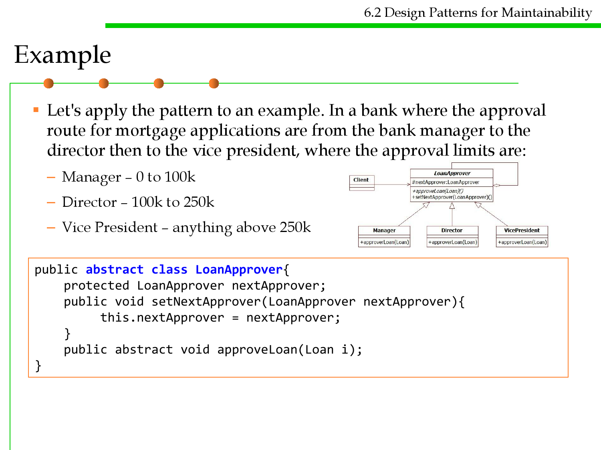
Example
6.2 Design Patterns for Maintainability
▪ Let's apply the pattern to an example. In a bank where the approval
route for mortgage applications are from the bank manager to the
director then to the vice president, where the approval limits are:
– Manager – 0 to 100k
– Director – 100k to 250k
– Vice President – anything above 250k
public abstract class LoanApprover{
protected LoanApprover nextApprover;
public void setNextApprover(LoanApprover nextApprover){
this.nextApprover = nextApprover;
}
public abstract void approveLoan(Loan i);
}

Example
6.2 Design Patterns for Maintainability
public class Director extends LoanApprover {
public void approveLoan(Loan i) {
if (i.getAmount() <= 250000)
System.out.println("Loan amount of " + i.getAmount() +
" approved by the Director");
else
nextApprover.approveLoan(Loan i);
}
}
public class Manager extends LoanApprover {
public void approveLoan(Loan i){
//similar code to Director
}
}
public class VicePresident extends LoanApprover {
public void approveLoan(Loan i){
System.out.println("Loan amount of " + i.getAmount() + "
approved by the Vice President");
}
}

Example
6.2 Design Patterns for Maintainability
public static void main(String[] args) {
LoanApprover a = new Manager();
LoanApprover b = new Director();
LoanApprover c = new VicePresident();
a.setNextApprover(b);
b.setNextApprover(c);
a.approveLoan(new Loan(50000)); //approved by the manager
a.approveLoan(new Loan(200000)); //approved by the director
a.approveLoan(new Loan(500000)); //approved by the vice president
}
The result:
Loan amount of 50000 approved by the Manager
Loan amount of 200000 approved by the Director
Loan amount of 500000 approved by the Vice President

Software Construction
(5) Command
Command Pattern
6.2 Design Patterns for Maintainability
▪ Intent
– Encapsulate a request as an object, thereby letting you parameterize clients
with different requests, queue or log requests, and support undoable
operations. 将请求封装为对象，进而可用不同的请求对客户端进行参数化处
理，对请求进行排队、记录请求日志、支持可撤销的操作。
▪ Motivation
– Sometimes it's necessary to issue requests to objects
without knowing anything about the operation being
requested or the receiver of the request.
有时必须向某对象提交请求，但并不知道关于被请求的操作
或请求的接受者的任何信息。
Command Pattern
6.2 Design Patterns for Maintainability
▪ Motivation
– For example, user interface toolkits include objects like buttons and menus
that carry out a request in response to user input. But the toolkit can‘t
implement the request explicitly in the button or menu, because only
applications that use the toolkit know what should be done on which object.
As toolkit designers we have no way of knowing the receiver of the request
or the operations that will carry it out.工具箱的设计者无法知道请求的接受
者或执行的操作 ，只有使用工具箱的应用知道该由哪个对象做哪个操作。
– The Command pattern lets toolkit objects make requests of unspecified
application objects by turning the request itself into an object. This object
can be stored and passed around like other objects.
– 命令模式通过将请求本身变成一个对象来使工具箱对象可向未指定的应用对
象提出请求。这个对象可被存储并像其他的对象一样被传递。

Command Pattern
6.2 Design Patterns for Maintainability
▪ The Command interface defines the methods that all ConcreteCommand
classes must implement.
▪ The ConcreteCommand class stores the details of the actions that need
to be performed. 保存需要执行的命令
▪ The Receiver class performs the action when called upon. 被调用时，执
行命令(具体操作)
▪ The Invoker class stores the list of commands and can ask
the Command to execute. Invoker 存储命令，启动命令执行
▪ The Client class uses the Invoker to run the commands.
Command Pattern
6.2 Design Patterns for Maintainability
▪ The client code (calling code) will used the Invoker to run the
commands, where the Command objects will call the Receiver to perform
the action. The benefit is that the client code does not need to know what
is stored in the Command objects nor the actions that will be performed
by the Receiver, and this is the key of the Command Design Pattern.
Client 通过Invoker执行Command，Command通过调用Receiver执行动
作。优点是客户端不需要知道所存储命令对象和操作的细节。

Example
6.2 Design Patterns for Maintainability
▪ In our example we need to store some undo actions when the user is
using the application, and when the user decides to perform the undo
we can just use the invoker to run the commands.
Example
6.2 Design Patterns for Maintainability
public interface Command {
void execute();
}
public class UndoCommand implements Command {
private int location;
public UndoCommand(int originalLocation) {
location = originalLocation;
}
public int getLocation() {
return location;
}
public void execute(){
new UndoPerformer().undo(this); // or given by client
}
}
 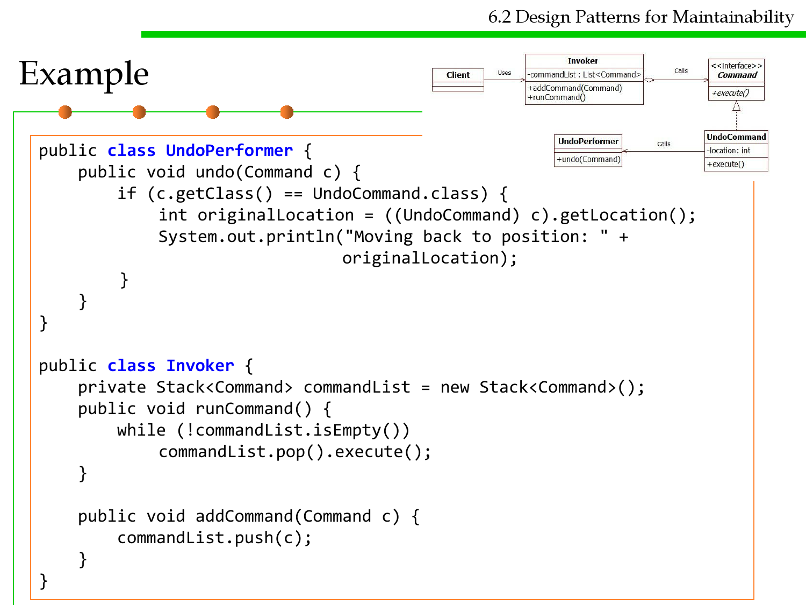
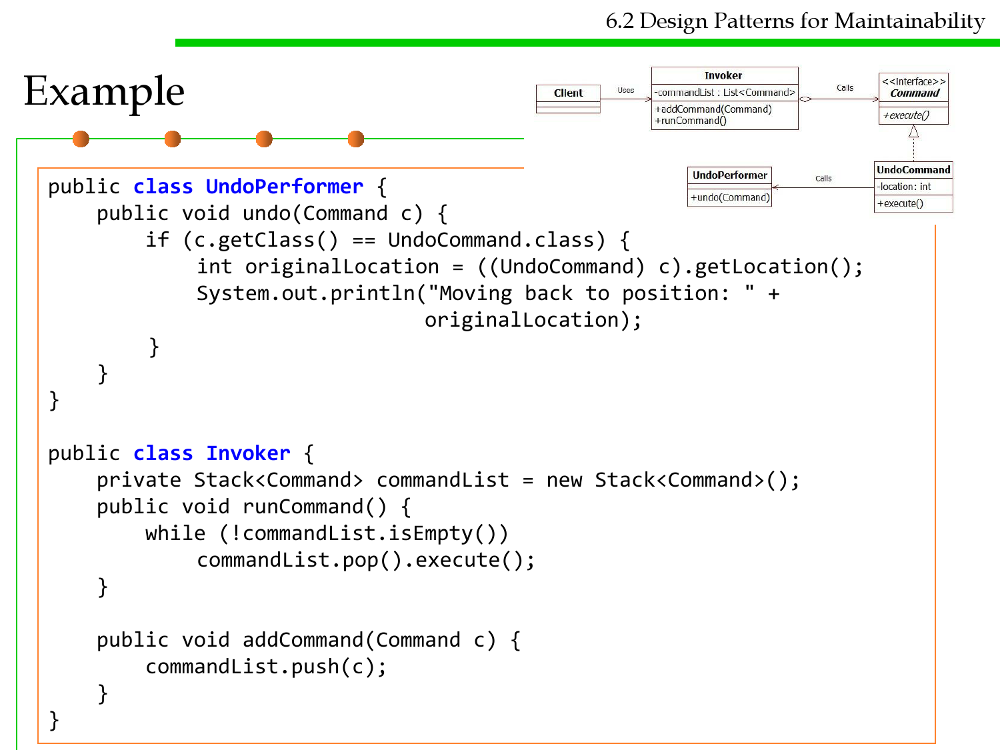
Example
6.2 Design Patterns for Maintainability
public class UndoPerformer {
public void undo(Command c) {
if (c.getClass() == UndoCommand.class) {
int originalLocation = ((UndoCommand) c).getLocation();
System.out.println("Moving back to position: " +
originalLocation);
}
}
}
public class Invoker {
private Stack<Command> commandList = new Stack<Command>();
public void runCommand() {
while (!commandList.isEmpty())
commandList.pop().execute();
}
public void addCommand(Command c) {
commandList.push(c);
}
}
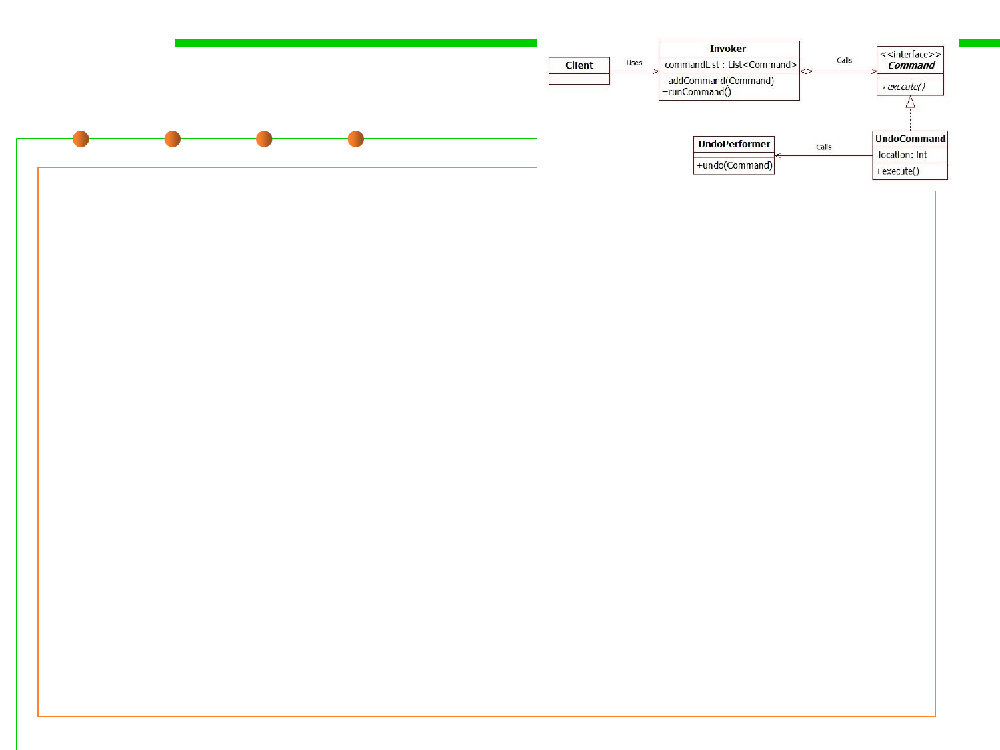
Example
6.2 Design Patterns for Maintainability
public class Client {
public static void main(String[] args) {
Invoker i = new Invoker();
// save undo to position 100
Command a = new UndoCommand(100);
i.addCommand(a);
// save undo to position 200
Command b = new UndoCommand(200);
i.addCommand(b);
// perform the undo
i.runCommand(); // the client does not need to know about the
details of the undo
}
}
//The result:
Moving back to position: 200
Moving back to position: 100

Command Pattern
6.2 Design Patterns for Maintainability
▪ Applicability
– Parameterize objects by an action to perform. E.g., callback function. 抽象出
待执行的动作以参数化某对象。如实现回调函数(函数先在某处注册，在稍后
某个需要的时候被调用)
– Specify, queue, and execute requests at different times. 在不同的时刻指定、
排列和执行请求
– Support undo. The Command‘s Execute operation can store state for
reversing its effects in the command itself 支持撤销操作
– Support logging changes so that they can be reapplied in case of a system
crash. 支持日志中的操作重新执行
– Structure a system around high-level operations built on primitives
operations. 用构建在原语操作上的高层操作构造一个系统，如事务机制。

Software Construction
High-level Considerations on Design
Patterns for Reusability and
Maintainability

6.2 Design Patterns for Maintainability
Clues for use of Design Patterns (1)
▪ Text: “manufacturer independent”, “device independent”, “must
support a family of products”
=> Abstract Factory Pattern
▪ Text: “must interface with an existing object”
=> Adapter Pattern
▪ Text: “must interface to several systems, some of them to be
developed in the future”, “an early prototype must be
demonstrated”
=>Bridge Pattern
▪ Text: “must interface to existing set of objects”
=> Façade Pattern

6.2 Design Patterns for Maintainability
Clues for use of Design Patterns (2)
▪ Text: “complex structure”, “must have variable depth and width”
=> Composite Pattern
▪ Text: “must be location transparent”
=> Proxy Pattern
▪ Text: “must be extensible”, “must be scalable”
=> Observer Pattern
▪ Text: “must provide a policy independent from the mechanism”
=> Strategy Pattern

Summary
6.2 Design Patterns for Maintainability
▪ Composite, Adapter, Bridge, Façade, Proxy (Structural Patterns)
– Focus: Composing objects to form larger structures
• Realize new functionality from old functionality,
• Provide flexibility and extensibility
▪ Command, Observer, Strategy, Template (Behavioral Patterns)
– Focus: Algorithms and assignment of responsibilities to objects
• Avoid tight coupling to a particular solution
▪ Abstract Factory, Builder (Creational Patterns)
– Focus: Creation of complex objects
• Hide how complex objects are created and put together


Software Construction
Summary

Software Construction
The end
April 17, 2019